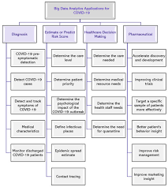

<!DOCTYPE html>
<html>

<head>
    <meta charset="utf-8" />
    <title>Computer Engineering Role in COVID-19 Pandemic</title>
    <meta name="discription" content="Artificial Intelligence" />
    <meta name="AH" content="0" />

</head>

<body>
    <h1>Applications of Data Analytics in COVID-19</h1>


    <p>The spread of the global pandemic, COVID-19, has generated a huge and varied
        amount of data, which is increasing rapidly. This data can be used by applying big data
        analytics techniques in multiple areas, including diagnosis, estimate or predict risk score,
        healthcare decision-making, and pharmaceutical industry [38]. Figure 1 shows examples
        of potential application areas.</p>

    

    <p>2.1. Diagnosis
        Suspected COVID-19 cases are diagnosed using the Reverse Transcription-Polymerase
        Chain Reaction (RT-PCR) test. This test takes around 24 h to several days, depending on
        the multiple conditions. Many countries experienced increased demand for diagnosing
        suspected COVID-19 cases, which exceeded the available local testing capacity. There￾fore, several researchers
        have proposed alternative solutions for the COVID-19 RT-PCR
        diagnosis test, including the following.
        The authors in Reference [39] have proposed a model to differentiate between COVID-
        19 and four other viral chest diseases. The model utilizes several body sensors to collect
        information and monitor the patient’s health condition, including temperature, blood
        pressure, heart rate, respiratory monitoring, glucose detection, and others. The collected
        data is stored on a cloud database containing AI-enabled expert systems that help diag￾nose symptoms of patients
        infected or suspected of having COVID-19 to determine the
        appropriate procedure to deal with them. However, it is not clear how the patient’s health
        information will be presented to the hospital staff. Moreover, the authors in Reference [19]
        had surveyed numerous papers about mathematical models to improve the efficiency in
        detecting and predicting COVID-19. Their survey suggested using artificial intelligence to
        detect COVID-19 cases, big data to trace cases, and nature-inspired computing (NIC) to
        select suitable features to increase the accuracy of detection.
        In Reference [40], the authors provided a flexible and low-cost design of a medical
        device that can be used to detect and track symptoms of COVID-19. It utilizes headphones
        and a mobile phone to detect breathing problems. The signals are collected and saved in
        an audio file format through the mobile app, after which the signals are analyzed using the
        MATLAB program to identify the respiratory symptoms associated with COVID-19.
        Researchers [41] also developed a program to remotely monitor discharged COVID-
        19 patients. Each patient registered to the app is provided with a pulse oximeter and
        thermometer to self-report daily symptoms, O2 saturation, and temperature. The abnormal
        Sensors 2021, 21, 2282 8 of 24
        vital signs and symptoms are flagged to be assessed by a group of nurses. Depending on
        the evaluation outcome, the patient might be readmitted to the Emergency Department
        (ED). The program helps reduce ED utilization and provides scalable remote monitoring
        capabilities when a patient is discharged from the hospital.
        The authors in Reference [42] found that smartwatches could be utilized in COVID-19
        pre-symptomatic detection. They analyzed the physiological and activity data collected
        from smartwatches of the infected COVID-19 cases. They concluded that 63% of COVID-19
        cases could be detected before symptoms appear by applying a two-level warning system
        based on severe elevations in resting heart rate relative to individual baseline. Moreover,
        they found that activity tracking and health monitoring using wearable devices can help in
        early detection of respiratory infections.
        Since the COVID-19 symptoms have not been fully identified and due to the changing
        nature of COVID-19, some studies have focused on identifying the medical characteristics
        and symptoms associated with positive COVID-19 cases. The study in Reference [43]
        focused on identifying the symptoms associated with the positive results of the COVID-19
        examination, and it was conducted on a group of healthcare workers (HCWs). Initial
        screening was performed by phone, and a COVID-19 PCR test was also performed for
        each HCW to identify symptoms associated with each case. The study found that the most
        common symptoms of positive COVID-19 cases were fever, myalgia, and anosmia/ageusia,
        while the negative cases mostly have no symptoms, or the symptoms are limited to nasal
        congestion and sore throat.
        The study in Reference [44] aimed to determine the clinical characteristics and out￾comes of 5700 hospitalized
        patients with COVID-19 in the NY area. However, the study
        included non-critically ill patients and the follow-up time was limited.
        Another study [45] proposed a website and Android app to separate a COVID-19
        cough sound from other respiratory sounds with the aid of crowdsourcing data from about
        7000 unique users (more than 200 of whom reported a recent positive test for COVID-19).
        Their proposed method employed Logistic Regression (LR), Gradient Boosting Trees, and
        Support Vector Machines (SVMs) classifiers to distinguish the cough sound data based
        on gender, age, and symptoms. Also, their classifiers distinguish the user based on other
        features, such as whether they are asthmatic patients, smokers, or healthy. Their app asks
        the user to cough from three to five times then repeat the process every two days to update
        the user’s health status. Their method proved that a COVID-19 cough can be distinguished
        from other lung diseases coughs from the sound of the cough combined with breathing
        sound to screen the disorder. It achieved 82% Area Under the Curve (AUC) in identifying
        the cases that tested positive for COVID-19. They recommended more studies in the field
        to specify more characteristics of a COVID-19 cough sound to make it more distinguishable
        from other respiratory sounds.
        The authors in Reference [46] declared the importance of using complementary tech￾nologies such as on-body
        sensors for diagnosing and monitoring COVID-19 infections. They
        stated that clinical devices are more reliable and provide more functions than smartwatches
        since these devices are distributed in different areas of the human body to detect different
        body signals. A thin, soft sensor with a high-bandwidth accelerometer and a precision tem￾perature sensor placed
        on the neck is very important to record respiratory activity from cough
        frequency, intensity, and duration to respiratory rate and effort, to high-frequency respiratory
        features associated with wheezing and sneezing. Also, they recommended machine learning
        and predictive algorithms to help to diagnose and monitor COVID-19.
        In Reference [47], researchers emphasized on the importance of identifying the char￾acteristics of COVID-19
        among patients of Saudi Arabia in managing the pandemic. The
        study included 1519 cases where data related to their ages, genders, vital signs, public
        data, and clinical examinations were collected. Their test was conducted based on the
        quantitative RT-PCR approach, which is the protocol established by the World Health
        Organization. After the data was gathered, it was entered into electronic sheets with
        distinct data collectors, and data was analyzed with Statistical Package for Social Sciences
        Sensors 2021, 21, 2282 9 of 24
        program, version 24 (SPSS-24). The statistics manifested that the most common symptoms
        of COVID-19 are cough and fever, with 89.4% and 85% presence in reported positive cases,
        respectively. Also, it confirmed that the most infected patients’ demographics include elder
        males, severe cardiac condition patients, and diabetic patients.
        The authors in Reference [48] had utilized machine learning techniques along with
        spark-based linear models, Multilayer Perceptron (MLP), and Long Short-Term Memory
        (LSTM) with a two-stage cascading platform to enhance the prediction accuracy in different
        datasets. They applied their method on two datasets for cardiac arrhythmia and resource
        locator, so their model performed with higher accuracy and lower computation time.
        Thus, the authors in Reference [49] had proposed a computer program method to aid the
        classification model to analyze the retinal image of diabetic retinopathy to investigate its
        effect among adults in causing blindness. It proved that the focused connection among
        layers of the convolutional network assists the accuracy of the classification result.
        The retrospective, observational study in Reference [50] conducted a statistical analysis
        to show the cardiovascular implications of COVID-19 on the patients. The study was
        performed on 116 patients who tested positive for COVID-19. The data was clinically
        collected and tested to extract clinical symptoms and signs, chest computed tomography,
        treatment measures, and medical records. The statistical analysis was performed on the
        data to reveal similar results as those reported by Reference [47], where the common
        symptoms were fever and dry cough, and the elder or middle-aged males, heart injury
        patients, hypertension patients, and diabetics were the most infected populations.</p>
</body>

</html>